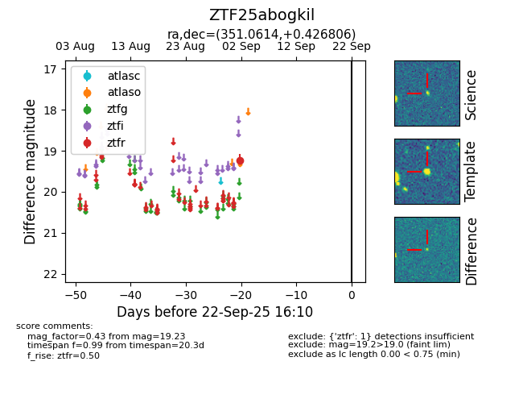

FINK: ZTF25abogkil
Lasair: ZTF25abogkil
ALeRCE: ZTF25abogkil
ZTF25abogkil (ztf,fink)
equatorial (ra, dec) = (351.0614,+0.42681)
galactic (l, b) = (82.1196,-55.37949)

last ztfr=19.23
1 ztfr detections